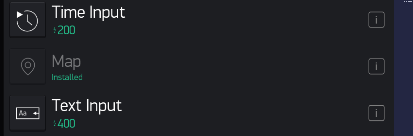
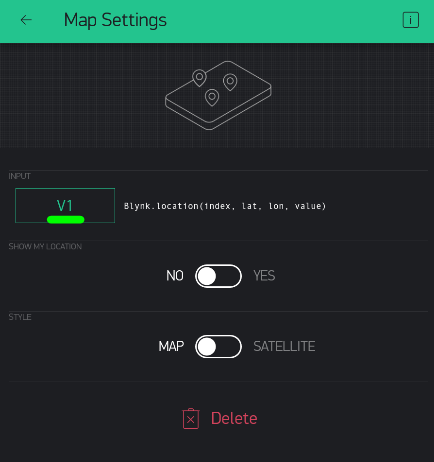

GPS
This is useful for tracking things or people or animals remotely.
In Blynk, add a Map widget to your dashboard.

Make sure to select a Virtual Pin - say, V1:

You can focus it around Singapore...
Code GPS Prototype
Start with simple Blynk Blink code...
Then add this before Setup():
WidgetMap myMap(V1);
This is how you pass information to Blynk's Map from your microcontroller: myMap.location(index, latitude, longitude, name of tracked object);
So you can add this to Setup() just to test:
myMap.location(0, 1.352800, 103.721820, "trackID1");
Putting it all together:
#define BLYNK_PRINT Serial
#include <BlynkSimpleEsp32.h>
// See Auth Token in email from Blynk...
char auth[] = "YourAuthToken";
// Your WiFi credentials.
// Set password to "" for open networks.
char ssid[] = "YourNetworkName";
char pass[] = "YourPassword";
WidgetMap myMap(V1);
void setup() {
// Debug console
Serial.begin(9600);
Blynk.begin(auth, ssid, pass, "a9i.sg", 8081);
myMap.location(0, 1.352800, 103.721820, "trackID1");
}
void loop() {
Blynk.run();
}
Faking It
Making the GPS electronics work can take a while. To make sure your concept works, we can fake a moving object by changing the latitude and longitude of a particular ID every second...:
#define BLYNK_PRINT Serial
#include <BlynkSimpleEsp32.h>
// See Auth Token in email from Blynk...
char auth[] = "YourAuthToken";
// Your WiFi credentials.
// Set password to "" for open networks.
char ssid[] = "YourNetworkName";
char pass[] = "YourPassword";
// The timer for checking the IR state
BlynkTimer timer;
// The Map Widget API
WidgetMap myMap(V1);
// Keeping track fo GPS Lat/Lon
float lat, lon;
void setup() {
// Debug console
Serial.begin(9600);
Blynk.begin(auth, ssid, pass, "a9i.sg", 8081);
lat = 1.352800;
lon = 103.721820;
// Update every N second (1000 ms = 1 second)
timer.setInterval(3000L, updateGPS);
}
void updateGPS() {
// Increase Lat by 0.0001
lat += 0.0001;
// Decrease Lon by 0.0001
lon -= 0.0001;
// Update Map
myMap.location(0, lat, lon, "trackID1");
}
void loop() {
Blynk.run();
timer.run();
}